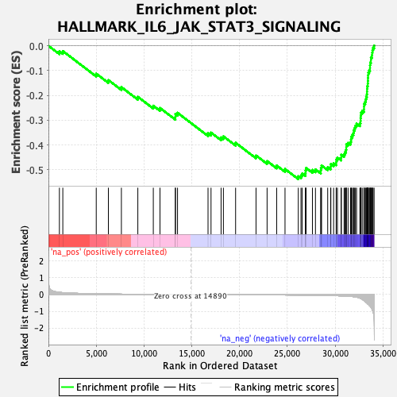
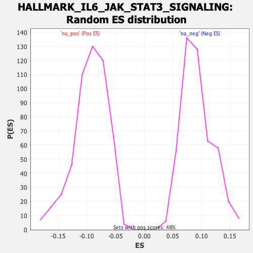

| | | Dataset | rankedList_GRAMD1B |
| Phenotype | NoPhenotypeAvailable |
| Upregulated in class | na_neg |
| GeneSet | HALLMARK_IL6_JAK_STAT3_SIGNALING |
| Enrichment Score (ES) | -0.53807706 |
| Normalized Enrichment Score (NES) | -5.7086225 |
| Nominal p-value | 0.0 |
| FDR q-value | 0.0 |
| FWER p-Value | 0.0 |
Table: GSEA Results Summary

Fig 1: Enrichment plot: HALLMARK_IL6_JAK_STAT3_SIGNALING
Profile of the Running ES Score & Positions of GeneSet Members on the Rank Ordered List
| SYMBOL | RANK IN GENE LIST | RANK METRIC SCORE | RUNNING ES | CORE ENRICHMENT | | 1 | CD44 | 1148 | 0.132 | -0.0223 | No |
| 2 | PTPN11 | 1505 | 0.113 | -0.0212 | No |
| 3 | LTBR | 5003 | 0.043 | -0.1125 | No |
| 4 | CD9 | 6273 | 0.032 | -0.1383 | No |
| 5 | IFNAR1 | 7634 | 0.023 | -0.1668 | No |
| 6 | HAX1 | 9354 | 0.014 | -0.2059 | No |
| 7 | TNFRSF12A | 10973 | 0.008 | -0.2419 | No |
| 8 | STAM2 | 11671 | 0.006 | -0.2509 | No |
| 9 | CD36 | 13281 | 0.002 | -0.2868 | No |
| 10 | PF4 | 13290 | 0.002 | -0.2755 | No |
| 11 | IFNGR1 | 13508 | 0.002 | -0.2704 | No |
| 12 | REG1A | 16699 | -0.002 | -0.3527 | No |
| 13 | CXCL1 | 17013 | -0.003 | -0.3504 | No |
| 14 | DNTT | 18065 | -0.005 | -0.3698 | No |
| 15 | CRLF2 | 18308 | -0.005 | -0.3654 | No |
| 16 | INHBE | 19584 | -0.009 | -0.3914 | No |
| 17 | CNTFR | 21721 | -0.015 | -0.4427 | No |
| 18 | CCL7 | 22879 | -0.019 | -0.4652 | No |
| 19 | ACVR1B | 23882 | -0.023 | -0.4832 | No |
| 20 | IL17RB | 24754 | -0.027 | -0.4973 | No |
| 21 | HMOX1 | 26143 | -0.034 | -0.5266 | Yes |
| 22 | PTPN2 | 26424 | -0.035 | -0.5233 | Yes |
| 23 | LEPR | 26550 | -0.036 | -0.5155 | Yes |
| 24 | IFNGR2 | 26885 | -0.038 | -0.5138 | Yes |
| 25 | IL1R2 | 26909 | -0.038 | -0.5030 | Yes |
| 26 | IL1B | 26959 | -0.039 | -0.4930 | Yes |
| 27 | CXCL11 | 27622 | -0.043 | -0.5009 | Yes |
| 28 | IL6ST | 27940 | -0.046 | -0.4987 | Yes |
| 29 | ITGB3 | 28495 | -0.051 | -0.5035 | Yes |
| 30 | CSF2 | 28508 | -0.051 | -0.4924 | Yes |
| 31 | IL7 | 28579 | -0.052 | -0.4830 | Yes |
| 32 | CXCL10 | 29220 | -0.059 | -0.4903 | Yes |
| 33 | TNFRSF1A | 29526 | -0.063 | -0.4878 | Yes |
| 34 | PIM1 | 29551 | -0.063 | -0.4770 | Yes |
| 35 | BAK1 | 29840 | -0.067 | -0.4739 | Yes |
| 36 | PLA2G2A | 30107 | -0.071 | -0.4703 | Yes |
| 37 | MAP3K8 | 30121 | -0.071 | -0.4591 | Yes |
| 38 | IL10RB | 30239 | -0.073 | -0.4511 | Yes |
| 39 | SOCS3 | 30631 | -0.080 | -0.4511 | Yes |
| 40 | IL6 | 30642 | -0.081 | -0.4399 | Yes |
| 41 | JUN | 30934 | -0.088 | -0.4370 | Yes |
| 42 | CXCL3 | 31041 | -0.091 | -0.4286 | Yes |
| 43 | IL13RA1 | 31136 | -0.093 | -0.4198 | Yes |
| 44 | TYK2 | 31165 | -0.094 | -0.4092 | Yes |
| 45 | IL9R | 31170 | -0.095 | -0.3978 | Yes |
| 46 | GRB2 | 31352 | -0.100 | -0.3916 | Yes |
| 47 | CSF3R | 31608 | -0.111 | -0.3876 | Yes |
| 48 | PDGFC | 31660 | -0.113 | -0.3776 | Yes |
| 49 | STAT2 | 31694 | -0.115 | -0.3671 | Yes |
| 50 | PTPN1 | 31810 | -0.121 | -0.3590 | Yes |
| 51 | IL1R1 | 31912 | -0.126 | -0.3505 | Yes |
| 52 | CBL | 31958 | -0.129 | -0.3403 | Yes |
| 53 | EBI3 | 32047 | -0.136 | -0.3314 | Yes |
| 54 | CSF2RA | 32126 | -0.143 | -0.3222 | Yes |
| 55 | STAT3 | 32242 | -0.155 | -0.3141 | Yes |
| 56 | IL3RA | 32590 | -0.213 | -0.3128 | Yes |
| 57 | IRF9 | 32653 | -0.227 | -0.3031 | Yes |
| 58 | IL17RA | 32662 | -0.231 | -0.2919 | Yes |
| 59 | IL4R | 32678 | -0.236 | -0.2808 | Yes |
| 60 | TLR2 | 32709 | -0.245 | -0.2702 | Yes |
| 61 | OSMR | 32835 | -0.284 | -0.2624 | Yes |
| 62 | ACVRL1 | 33016 | -0.364 | -0.2562 | Yes |
| 63 | MYD88 | 33019 | -0.365 | -0.2447 | Yes |
| 64 | FAS | 33035 | -0.371 | -0.2337 | Yes |
| 65 | IL18R1 | 33144 | -0.426 | -0.2254 | Yes |
| 66 | CCR1 | 33207 | -0.456 | -0.2157 | Yes |
| 67 | CSF2RB | 33246 | -0.473 | -0.2053 | Yes |
| 68 | IL2RA | 33316 | -0.504 | -0.1958 | Yes |
| 69 | CD14 | 33334 | -0.511 | -0.1848 | Yes |
| 70 | SOCS1 | 33340 | -0.513 | -0.1735 | Yes |
| 71 | TGFB1 | 33364 | -0.531 | -0.1627 | Yes |
| 72 | IL15RA | 33413 | -0.558 | -0.1526 | Yes |
| 73 | A2M | 33424 | -0.566 | -0.1414 | Yes |
| 74 | TNFRSF21 | 33434 | -0.568 | -0.1302 | Yes |
| 75 | CSF1 | 33443 | -0.571 | -0.1189 | Yes |
| 76 | ITGA4 | 33465 | -0.585 | -0.1080 | Yes |
| 77 | STAT1 | 33558 | -0.638 | -0.0992 | Yes |
| 78 | PIK3R5 | 33645 | -0.683 | -0.0903 | Yes |
| 79 | TNF | 33650 | -0.685 | -0.0789 | Yes |
| 80 | TNFRSF1B | 33667 | -0.698 | -0.0679 | Yes |
| 81 | IRF1 | 33740 | -0.749 | -0.0585 | Yes |
| 82 | CXCL9 | 33743 | -0.752 | -0.0471 | Yes |
| 83 | CD38 | 33842 | -0.848 | -0.0385 | Yes |
| 84 | IL2RG | 33874 | -0.895 | -0.0279 | Yes |
| 85 | IL12RB1 | 33906 | -0.945 | -0.0173 | Yes |
| 86 | LTB | 33971 | -1.044 | -0.0077 | Yes |
| 87 | CXCL13 | 34076 | -1.417 | 0.0008 | Yes |
Table: GSEA details [plain text format]

Fig 2: HALLMARK_IL6_JAK_STAT3_SIGNALING: Random ES distribution
Gene set null distribution of ES for HALLMARK_IL6_JAK_STAT3_SIGNALING